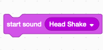
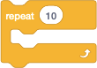

Lesson 2: Oomph! I found the Wall
Completing these challenges will require cooperation. Not just cooperation among your team members, but also cooperation between you and your robot. You, the smart, creative human, know the goal that the robot needs to achieve. You can picture in your mind the robot springing into action when you press a button, using its sensors to avoid the walls as it searches the arena. However, the robot lacks this kind of imagination. It only knows how to follow a set of instructions.
So it is up to you to create the plan and then communicate it to your robot. You might start out by writing out the set of steps the robot should follow, such as:
- Wait for the start signal
- Drive forward a bit
- Did you hit a wall? If so, turn left (or right)
- Go back to step 2 again to keep driving
That looks like a good plan. Unfortunately, the robot doesn’t understand the words we wrote above. You need to tell those steps to your robot in a language it knows.
Remember that your robot has no understanding of the big picture goal that you are trying to solve – it just knows to follow the instructions you gave it. If the robot doesn’t behave the way you expected (and on the first try it probably won’t!), that might be because the instructions aren’t quite right. Read over your program and see if you can spot the problem, then fix it and try again.
Last session, we saw how the robot can follow a sequence of instructions one after the other (move forward, then turn left, and so on.) Another key aspect of a robot is taking input from its sensors and then deciding how to act. Today we’ll use the Force Sensor so the robot can detect walls, and react!
For example, we want our robot to search through a room by driving until it hits a wall, and then turns right. Our steps might look like:
- Drive forward
- Wait until we hit a wall, back up slightly, then turn right
- Go back to 1 to continue searching
Lets see how we program this in the SPIKE App!
Wait Until Blocks
Wait Until blocks allow the robot to detect various kinds of input, or changes in what its sensors detect. With a Wait Until block, the robot will “wait until” a certain condition occurs. Then the next block in the program is the action to take.
Each sensor in your MINDSTORMS SPIKE kit has a corresponding wait until block in the SPIKE App. You’ve already used one Wait Until block for the SPIKE brick buttons so you can better control when your program runs. Remember, this gives you time to disconnect the USB cable, if you are using it, and to prepare your work area for the robot to run.
Figure 1 shows a wait until with the available sensor expressions. Don’t code this (the program is pointless), we’re just showing the available blocks.
{kind=link}
Sound Block
Your robot can play sound with Sound blocks. Besides being fun and making your robot more interactive, they can be used as a debugging aid. You can place sound blocks in you program to help you determine what part of the program is running when you observe some unexpected behavior in the robot. We’ll use sound blocks in this exercise to understand the behavior of wait blocks.
The Sound block can play sound files or various beep tones. The play sound until done will play a sound and the next block in your program will not run until the sound completes. start sound

will play a sound and run the next blocks in your program immediately. We recommend starting with aplay sound until done block as with the start sound block you could easily play multiple sounds which could be confusing. Change to start sound if the pause in your program affects the robot’s behavior in a way you don’t like.
The SPIKE App plays sound files on the device that is running the App (e.g. your laptop, iPad, Chromebook, etc). The SPIKE brick itself is only able to play beeps. This means that to use sounds with your program, the SPIKE brick must be connected to SPIKE App.
If you are using the USB cable and your robot is programmed to move, use beeps instead of sounds to avoid having the USB cable stretched, tangled or damaged when running your program.
Be considerate to others around you when playing sounds: start at a lower volume, and limit the number of sounds in the program. You might need to adjust the sound level, or turn the sound on on the robot to hear the sounds at the expected volume. Sound files are large: the first time you download your program you might notice a delay, and having many sound blocks means you can’t download as many programs to your SPIKE brick.
Force Sensor
The Force Sensor detects when the black tip is pressed (pushed in), hard pressed (pressed in farther), released (let go when it was already pressed) or pressed in a certain amount.
{kind=link}
Sensor and Motor Ports in your Program
With your robot built, and motors and sensors plugged in, the default ports on the programming blocks in the SPIKE App will match. This will save you time when programming as you will not have to change the port selections in the programming blocks as much. If you connect your robot, and then disconnect and power it off, the SPIKE App will remember this last known configuration. And you won’t drain your SPIKE brick’s battery while you finish the program.
Just remember that you might have to double check or change the programming ports in your program if the ports your motors or sensors are plugged into change, or if you created your program and never connected a robot (the defaults for most motors and sensors in that case change to A). Note that once you add a programming block to your programming canvas, the port selection will not change based on the robot configuration: you’ll have to manually change the program or change the ports the motor or sensor are plugged in to to make the program function as intended.
Programming Exercise
We’ll use the sound block to observe the behavior of the wait until blocks.
Open the SPIKE App software, create a new project.
Add a play sound until done to the start of your program.
Add a wait until  to your program, then add a
to your program, then add a force sensor is pressed to it.
Add a second play sound block to the program, but play a different sound so you can tell it apart from the first sound block. To do this you’ll need to open the drop list for the sound, and then click add sound ... so you can add another sound.
{kind=link}
{kind=link}
You can also record your own sounds and change the sound with effects. Do not spend much time trying that out. As the need arises you can revisit that in a later lesson. Its also likely you’ll have a lot of background noise in class so it will be hard get a clean recording.
The first sound will play, and the second sound will not play until you press the button on the front of the Force sensor. Debug your program and robot until it works as you expect.
Save this program with a name “Wait with sound”. Connect the SPIKE brick, download and run the program. You should hear the sounds play one after the other once you press the force sensor.
{kind=link}
Force Sensor Mounting and Bumpers
Mount the Force sensor to your robot. The kit instructions show one way to create a mount, and they include other options. You can also create a bumper in front of the Force sensor to make it work better. This increases the surface area of the button, which is small. With a bumper, the button will be easier to press when it encounters an obstacle or wall. The following images show two bumper ideas.
{kind=link}
{kind=link}
Programming Exercise
One way to use a wait for touch block is to place it after a start moving This will tell the robot to start moving, and keep moving until it bumps into something. Placing a stop moving after the wait until block will tell the robot to stop moving when it does bump into something.
Download this program to the robot and run it. The robot should move forward and will stop when the Force sensor is pressed: you can press it with your hand to test the program. Then try it on an obstacle like a book or the wall.
{kind=link}
Looping
At this point, we know how to combine Movement and Wait blocks to instruct the robot to drive until it hits a wall, then take an action. But what happens after that? The robot will go on to the next block in your program, which might be another move or wait block, but eventually it will run out of blocks and the program will end. If our goal is to make the robot search the room until it finds something, that won’t work if the program ends after hitting a wall!
Looping makes the robot perform some action repeatedly. the SPIKE App has loops that let you repeat a set of blocks a specific number of times (loop until count), looping forever, or looping until a specific condition is met (such as a sensor input, or a variable is set to some value).
{kind=link}
Programming Exercise
Enhance your “Wait with sound” program. Add a loop until count

around the other blocks in the program with a count of 2. Run the program and ensure you hear each sound block twice (remember to press the Force Sensor) before the program ends.